MiGuXeiToR
MiGuXeiToR Embriagueitor
Embriagueitor Engripeitor
Engripeitor Subwaytor
Subwaytor Tabuada
Tabuada Relógio
Relógio Cara ou Coroa?
Cara ou Coroa? vira|ɐɹıʌ
vira|ɐɹıʌ
- Toda vez que você vai no Subway, você empaca a fila?
- Você fica ali olhando o cartaz e não consegue se decidir?
- As pessoas da fila te olham como se quisessem te bater?
- Quando a atendente pergunta, você não sabe o que responder?
- São várias opções, é difícil escolher a melhor, não é mesmo?
Seus problemas acabaram!
Chegou o sensacional SUBWAYTOR, o site que analisa a condição atual do seu organismo e escolhe as melhores combinações de ingredientes para uma refeição saudável e nutritiva!
Encoste a ponta do polegar esquerdo na tela do computador (em qualquer parte), e com a mão direita use o mouse para clicar no sanduíche (abaixo). Uma nova combinação personalizada será gerada automaticamente, especialmente para você! Não esqueça de encostar bem o dedo para que o computador possa saber mais sobre a sua saúde!
Experimente o SUBWAYTOR agora mesmo:
|
Quero outro! |
AGUARDE, preparando os sanduíches...
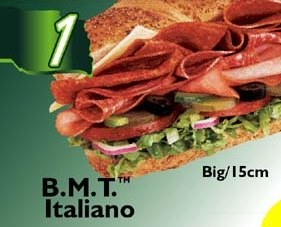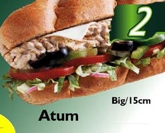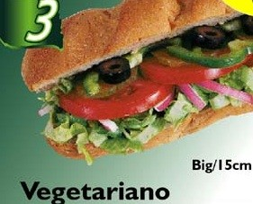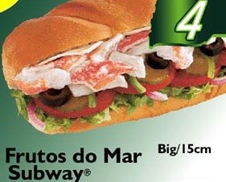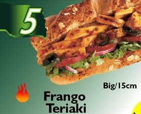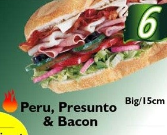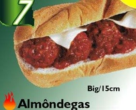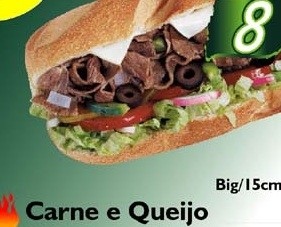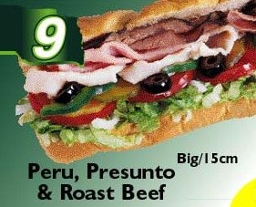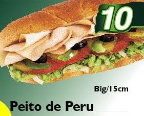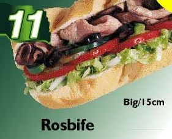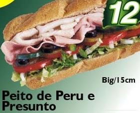
|
Imprima esta página e passe para a atendente do Subway, que fará seu sanduíche em tempo recorde. Chega de ser um empaca-fila!